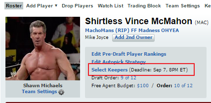

Macho Man Constitution
Purpose
Every year, without fail, the following questions are asked:
- What are the keeper rules?
- Where can I find last year's draft results?
Keeper Rules
Heres an overview of the keeper rules that have been in place for at least 5 years
-
Keepers need to be in a day before the draft
-
Keepers can be selected by going to your team page and clicking the "Select Keepers" link

-
If you keep a player, you lose a round above where he was selected last year. E.g. If you picked Ryan Tannehill in the 6th
round last year, you would lose a 5th rounder this year.
-
You can't keep a player you selected in the first round last year, nor can you keep a keeper that you kept last year if they
were projected to go in the first round last year.
-
The lowest draft pick you would lose is the 8th round. Therefore, if you kept a keeper you selected in the 9th round last
year, you would lose your 8th rounder this year. If you keep a 13th rounder from last year, you lose
your 8th round this year.
Where Can I find last year's draft results
Last year's draft picks can be found by going to last years page, clicking the "More" dropdown from the subnav and Selecting
"Draft Recap". I cant link directly to the draft recap but heres last years league page -
Results